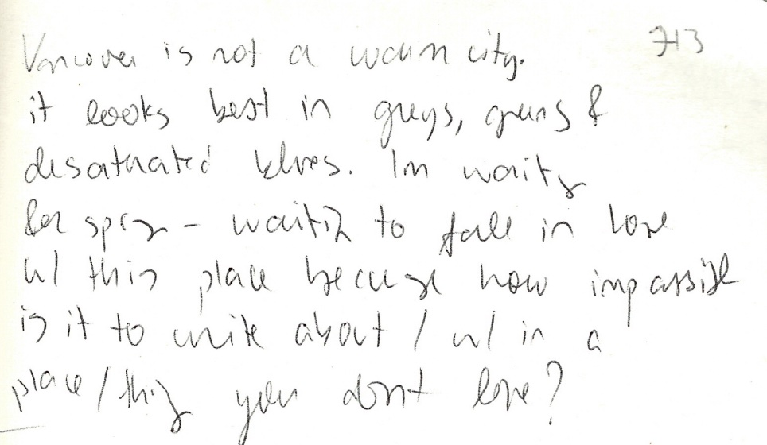

PROCESS ATLAS
scraps from notebooks, voice memos, mindmaps, workflows

[Vancouver is not a warm city. It looks best in greys, greens, and desaturated blues. Im waiting for spring - waiting to fall in love w/ this place because how impossible is it to write about / w/in a place/thing you dont love?]